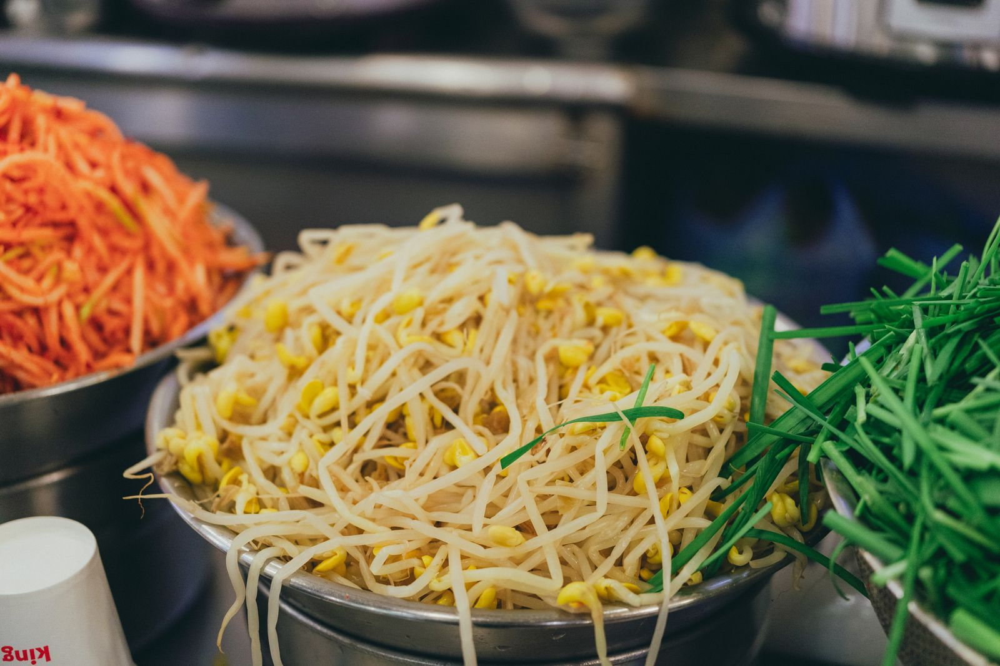
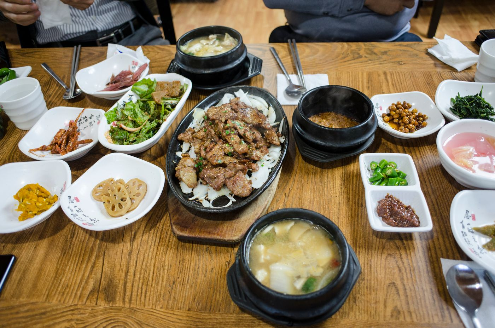

OUR STORY
매일 아침 시장에서
장 봐서 차리는 밥상
온기식당은 새벽 시장에서 그날 쓸 나물과 채소를 직접 골라 오는 것으로 하루를 시작해요. 숙주는 데치고, 당근은 볶고, 부추는 무쳐서 갓 지은 밥 옆에 놓습니다.
화려한 상차림은 아니어도, 집에서 먹는 것처럼 편안한 한 끼. 반찬은 매일 조금씩 바뀌어요.
이 브라우저에서는 새로 고치거나 화면을 옮기면 바뀐 내용이 사라져요
동네 한식 백반집

점심 11:00–15:00

OUR STORY
온기식당은 새벽 시장에서 그날 쓸 나물과 채소를 직접 골라 오는 것으로 하루를 시작해요. 숙주는 데치고, 당근은 볶고, 부추는 무쳐서 갓 지은 밥 옆에 놓습니다.
화려한 상차림은 아니어도, 집에서 먹는 것처럼 편안한 한 끼. 반찬은 매일 조금씩 바뀌어요.
HOURS